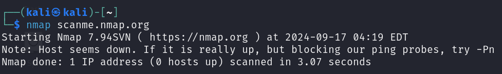
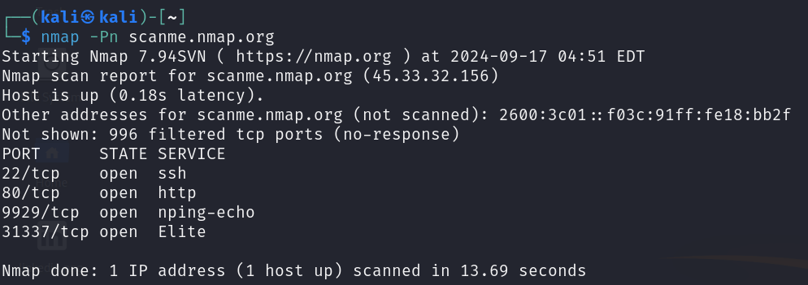
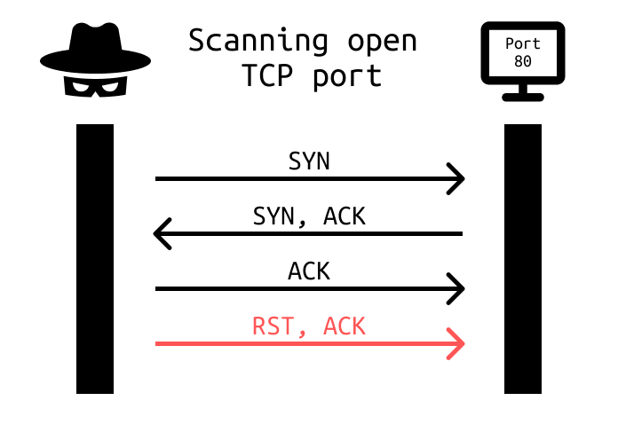
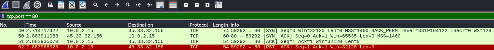
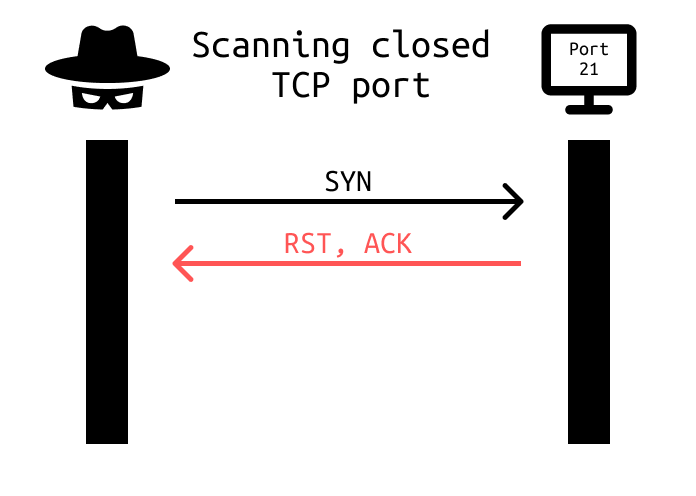
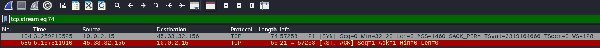
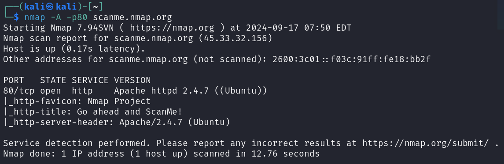

Port scanning is one of the essential techniques used when performing active reconnaissance. Nmap allows performing scans on both TCP and UDP ports. On a top of it, Nmap is also capable of giving us more information about services running on these ports.
We will look at some basic options and how Nmap works under the hood when performing TCP scanning using a tool called Wireshark.
For these examples, I will be performing scans on scanme.nmap.org. It's maintained by Nmap creators, you are allowed to perform scans on this address, but don't overdo it and get your IP blocked.
Remember, you shouldn't perform any scans on IPs without permission!!!

By default, without any options, Nmap first try to probe the target to know if it's up. Some targets might block these probes, so we need to add -Pn option to skip it.


Nmap simply tries to perform TCP three-way handshake. After the handshake is completed, session is terminated by sending RST flag.

Here is an example of how the process looks via Wireshark. I highly recommend capturing your own packets while performing scans and explore them. It will help you to understand everything better, especially if you try other scanning techniques that Nmap provides.

In case of scanning closed port, target simply refuses to complete the handshake and sends RST flag right away.

By default without any options provided, Nmap scans the 1000 most common ports.
You can specify own port range using -p option. For example, -p1-65535 will scan all ports from 1 to 65535.
Scanning only single port is also possible by adding -p21 option. You can also add another ports divided by a comma, for example -p21,80,110.
Nmap can also give you more information about the service running on the open port. A very useful piece of information is the service version, by which you can tell if the service is vulnerable.
Just add -sV option.
It's also important to note that the service version doesn't have to be always 100% correct.
Useful information might also be which operating system is running on the target machine.
You can enable OS detection by adding -O option.
Same as service version, results doesn't have to be always 100% correct.
Nmap's Script Scan is a powerful feature that utilizes the Nmap Scripting Engine to perform detailed vulnerability detection.
To enable this feature, just add -sC option.

You can see I have used -A option in this example. This option enables all 3 Nmap features mentioned above. It's same as writing -O -sV -sC.
I have specified -p80 to scan only port 80.
Nmap is a very useful and feature rich port scanner. We have only scratched a surface in this article. For full documentation, visit nmap.org